Nikola Tesla
Foi um inventor, engenheiro eletrotécnico e engenheiro mecânico sérvio, mais conhecido por suas contribuições ao projeto do moderno sistema de fornecimento de eletricidade em corrente alternada (CA)
Nascido e criado no Império Austríaco, Tesla estudou engenharia e física na década de 1870 sem se formar, e ganhou experiência prática no início da década de 1880 trabalhando em telefonia e na Continental Edison, na nova indústria de energia elétrica.
Com a ajuda de parceiros para financiar e comercializar suas ideias, Tesla montou laboratórios e empresas em Nova Iorque para desenvolver uma variedade de dispositivos elétricos e mecânicos.
Seu motor de indução de corrente alternada e patentes relacionadas ao sistema polifásico, licenciadas pela Westinghouse Electric em 1888, lhe renderam uma quantia considerável de dinheiro e se tornaram a pedra angular do sistema polifásico que a empresa acabou comercializando.
Tesla experimentou uma série de invenções nas décadas de 1910 e 1920 com graus variados de sucesso. Tendo gasto a maior parte de seu dinheiro, Tesla morava em uma série de hotéis de Nova Iorque, deixando para trás contas não pagas. Ele morreu na cidade de Nova Iorque em janeiro de 1943.O trabalho de Tesla caiu em relativa obscuridade após sua morte, até 1960, quando a Conferência Geral de Pesos e Medidas nomeou a unidade SI de densidade de fluxo magnético como tesla em sua homenagem.
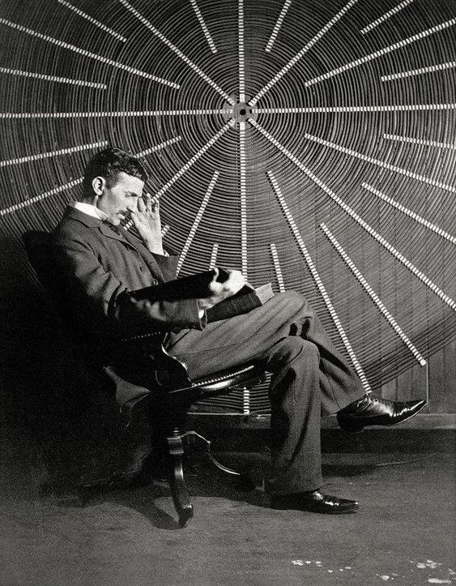Albert Einstein
Embora mais conhecido por sua fórmula de equivalência massa-energia, E = mc² — que foi chamada de "a equação mais famosa do mundo" —, foi laureado com o Prêmio Nobel de Física de 1921 "por suas contribuições à física teórica" e, especialmente, por sua descoberta da lei do efeito fotoelétrico, que foi fundamental no estabelecimento da teoria quântica
Nascido em uma família de judeus alemães, mudou-se para a Suíça ainda jovem e iniciou seus estudos na Escola Politécnica de Zurique. Após dois anos procurando emprego, obteve um cargo no escritório de patentes suíço enquanto ingressava no curso de doutorado da Universidade de Zurique. Em 1905, publicou uma série de artigos acadêmicos revolucionários. Uma de suas obras era o desenvolvimento da teoria da relatividade especial.
Percebeu, no entanto, que o princípio da relatividade também poderia ser estendido para campos gravitacionais, e com a sua posterior teoria da gravitação, de 1916, publicou um artigo sobre a teoria da relatividade geral. Enquanto acumulava cargos em universidades e instituições, continuou a lidar com problemas da mecânica estatística e teoria quântica, o que levou às suas explicações sobre a teoria das partículas e o movimento browniano.
Realizou diversas viagens ao redor do mundo, deu palestras públicas em conceituadas universidades e conheceu personalidades célebres de sua época, tanto na ciência quanto fora do mundo acadêmico. Publicou mais de 300 trabalhos científicos, juntamente com mais de 150 obras não científicas. Suas grandes conquistas intelectuais e originalidade fizeram da palavra "Einstein" sinônimo de gênio. Em 1999, foi eleito por 100 físicos renomados o mais memorável físico de todos os tempos.
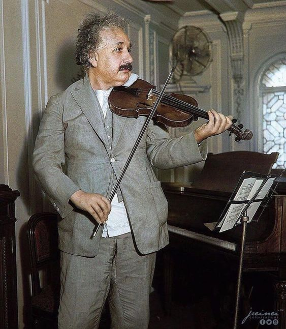Issac Newton
Newton construiu o primeiro telescópio refletor prático e desenvolveu uma teoria sofisticada da cor com base na observação de que um prisma separa a luz branca nas cores do espectro visível. Seu trabalho sobre a luz foi coletado em seu livro altamente influente Ótica, publicado em 1704. Também formulou uma lei empírica do resfriamento, fez o primeiro cálculo teórico da velocidade do som e introduziu a noção de um fluido newtoniano. Além de seu trabalho sobre cálculo, como matemático Newton contribuiu para o estudo de séries de potências, generalizou o teorema binomial a expoentes não inteiros, desenvolveu um método para aproximar as raízes de uma função e classificou a maioria das curvas do plano cúbico.
Isaac Newton nasceu no dia de Natal, 25 de dezembro de 1642 (ou 4 de janeiro de 1643) "uma ou duas horas depois da meia-noite", no Woolsthorpe Manor em Woolsthorpe-by-Colsterworth, uma aldeia no condado de Lincolnshire
Dos doze anos até os dezessete anos, Newton foi educado na escola The King's School, em Grantham, que ensinava latim e grego e provavelmente transmitia uma base significativa de matemática. Foi removido da escola e retornou a Woolsthorpe-by-Colsterworth em outubro de 1659. Sua mãe, viúva pela segunda vez, tentou fazer dele um fazendeiro, uma ocupação que ele odiava. Henry Stokes, mestre da Escola King, convenceu sua mãe a mandá-lo de volta à escola. Newton voltou à escola motivado em parte pelo desejo de vingança contra um valentão que havia se tornado o aluno mais bem classificado, se destacando principalmente pela construção de relógios de sol e modelos de moinhos de vento
Em junho de 1661 foi admitido no Trinity College, Cambridge, por recomendação de seu tio, Rev. William Ayscough, que havia estudado lá. Começou como um tipo de bolsista, pagando seus estudos ao cumprir as funções de manobrista - até receber uma bolsa de estudos em 1664, garantindo-lhe mais quatro anos até conseguir seu diploma de mestrado. Naquela época, os ensinamentos da faculdade eram baseados nos de Aristóteles, que Newton complementou com filósofos modernos como Descartes e astrônomos como Galileu e Thomas Street, através dos quais ele aprendeu sobre o trabalho de Kepler. Colocou em seu caderno uma série de "Quaestiones" (questões) sobre a filosofia mecânica. Em 1665 descobriu o teorema binomial generalizado e começou a desenvolver uma teoria matemática que mais tarde se tornou o cálculo. Logo depois que Newton obteve seu diploma de bacharel em agosto de 1665, a universidade fechou temporariamente como precaução contra a Grande Praga. Apesar de ter sido indistinguível como estudante de Cambridge, os estudos privados de Newton em Woolsthorpe ao longo dos dois anos seguintes viram o desenvolvimento de suas teorias em cálculo e outras áreas.
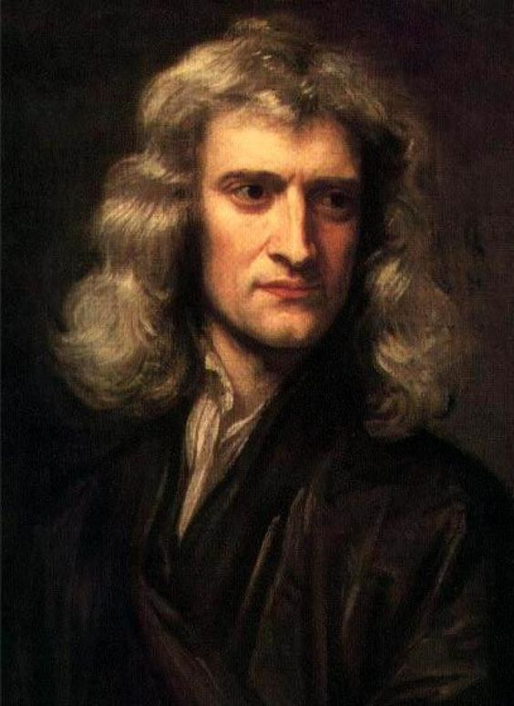Stephen Hawking
Doutor em cosmologia, foi professor lucasiano emérito na Universidade de Cambridge, um posto que foi ocupado por Isaac Newton, Paul Dirac e Charles Babbage. Foi, pouco antes de falecer, diretor de pesquisa do Departamento de Matemática Aplicada e Física Teórica (DAMTP) e fundador do Centro de Cosmologia Teórica (CTC) da Universidade de Cambridge
Seus trabalhos científicos incluem um teorema sobre a singularidade gravitacional no âmbito da relatividade geral (em colaboração com Roger Penrose) e a previsão teórica de que os buracos negros emitem radiação, frequentemente chamada de Radiação Hawking. Hawking foi o primeiro cientista a estabelecer uma teoria da cosmologia explicada pela união da teoria geral da relatividade e da mecânica quântica. Ele foi um defensor fervoroso da interpretação de muitos mundos na mecânica quântica.
Em 1963, Hawking foi diagnosticado com uma forma de início precoce da doença neuronal motora (MND; também conhecida como esclerose lateral amiotrófica "ALS" ou doença de Lou Gehrig) que o paralisou gradualmente ao longo das décadas.Mesmo após a perda de sua capacidade de falar, ele ainda era capaz de se comunicar por meio de um dispositivo gerador de fala, inicialmente através do uso de um interruptor de mão e, mais tarde, usando um único músculo da bochecha. Ele morreu no dia 14 de março de 2018, aos 76 anos de idade, depois de lutar contra essa doença durante mais de 50 anos.
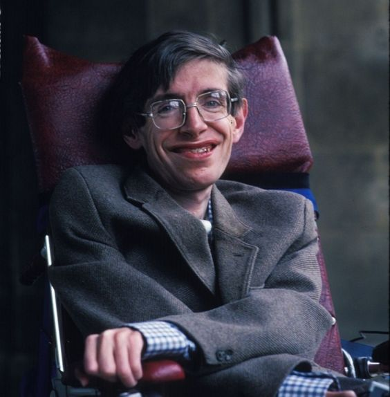Steve Jobs
Foi um inventor, empresário e magnata americano no setor da informática. Notabilizou-se como co-fundador, presidente e diretor executivo da Apple Inc. e por revolucionar seis indústrias: computadores pessoais, filmes de animação, música, telefones, tablets e publicações digitais. Além de sua ligação com a Apple, foi diretor executivo da empresa de animação por computação gráfica Pixar e acionista individual máximo da The Walt Disney Company.Morreu no dia 5 de outubro de 2011, aos 56 anos de idade, devido a um câncer pancreático.
No final da década de 70, Jobs, em parceria com Steve Wozniak e Mike Markkula, entre outros, desenvolveu e comercializou uma das primeiras linhas de computadores pessoais de sucesso, a série Apple II.
Após perder uma disputa de poder com a mesa diretora em 1985, Jobs foi demitido da Apple e fundou a NeXT, uma companhia de desenvolvimento de plataformas direcionadas aos mercados de educação superior e administração. A compra da NeXT pela Apple em 1996 levou Jobs de volta à companhia que ele ajudara a fundar, sendo então seu CEO de 1997 a 2011, ano em que anunciou sua renúncia ao cargo, recomendando Tim Cook como sucessor.
Charles Darwin
Juntamente com Alfred Wallace, Darwin estabeleceu a ideia que todos os seres vivos descendem de um ancestral em comum, argumento agora amplamente aceito e considerado um conceito fundamental no meio científico, e propôs a teoria de que os ramos evolutivos são resultados de seleção natural e sexual, onde a luta pela sobrevivência resulta em consequências similares às da seleção artificial.
Seu livro de 1859, A Origem das Espécies, causou espanto na sociedade e comunidade científica da época, mas conseguiu grande aceitação nas décadas seguintes, superando a rejeição que os cientistas tinham pela transmutação de espécies. Já em 1870, a evolução por seleção natural tinha apoio da maioria dos intelectuais. Sua aceitação quase universal, entretanto, não foi atingida até à emergência da síntese evolutiva moderna entre as décadas de 1930 e 1950 quando um grande consenso consolidou a seleção natural como o mecanismo básico da evolução. A teoria de Darwin é considerada o mecanismo unificador para explicar a vida e a diversidade na Terra.
Consagrada a publicação, a teoria evolutiva darwiniana determinou drasticamente o cenário da ciências biológicas, tornando-se a explicação dominante sobre o porquê da diversidade natural do planeta. Em 1871, Darwin volta a publicar livros significativos, desta vez começando sobre a sexualidade humana e sua descendência, intitulado A Descendência do Homem e Seleção em Relação ao Sexo, seguido por A Expressão da Emoção em Homens e Animais em 1872. Sua dedicação pelas plantas resultaram em várias publicações de livros, e seu último seria The Formation of Vegetable Mould through the Action of Worms em 1881, meses antes de sua morte no ano seguinte. Em reconhecimento à importância do seu trabalho, Darwin foi enterrado na Abadia de Westminster, próximo a Charles Lyell, William Herschel e Isaac Newton. Foi uma das cinco pessoas não ligadas à família real inglesa a ter um funeral de Estado no século XIX. Por seu papel científico, Darwin é considerado uma das maiores personalidades da história.
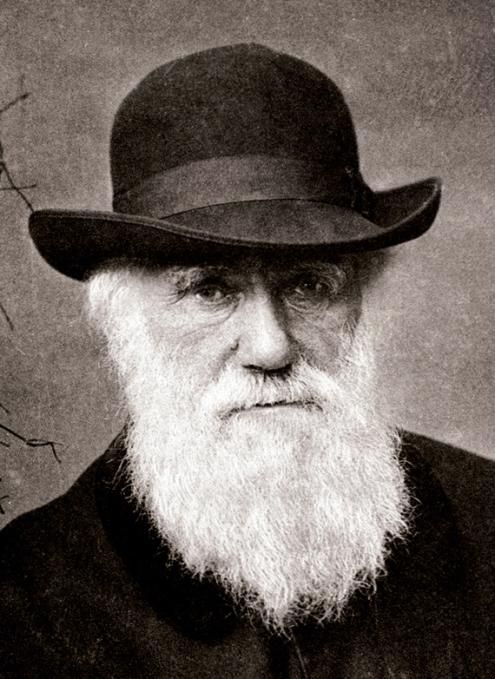Niels Bohr
Bohr desenvolveu um modelo atômico no qual ele propôs que os níveis de energia dos elétrons são discretos e que os elétrons revolucionam em órbitas estáveis em torno do núcleo atômico, sendo capazes de "saltar" de um nível de energia (ou uma órbita) para outro. Apesar de o modelo atômico de Bohr ter sido suplantado por outros modelos, alguns de seus princípios fundamentais permanecem válidos. Ele concebeu o princípio da complementaridade: que objetos poderiam ser analisados separadamente com propriedades contraditórias, comportando-se como uma onda ou um fluxo de partículas. A noção de complementaridade dominou o pensamento de Bohr tanto na ciência quanto na filosofia.
Licenciou-se na sua cidade natal em 1911 e trabalhou com Joseph John Thomson e Ernest Rutherford na Inglaterra. Em 1913 conseguiu interpretar algumas das propriedades das séries espectrais do hidrogênio e a estrutura do sistema periódico dos elementos químicos. Formulou o princípio da correspondência e, em 1928, o da complementaridade. Estudou ainda o modelo nuclear da gota líquida e, antes da descoberta do plutónio, previu a propriedade da fissão nuclear, análoga à do urânio-235. Bohr recebeu o Nobel de Física em 1922 por "sua contribuição na investigação da estrutura dos átomos e da radiação emitida por eles".
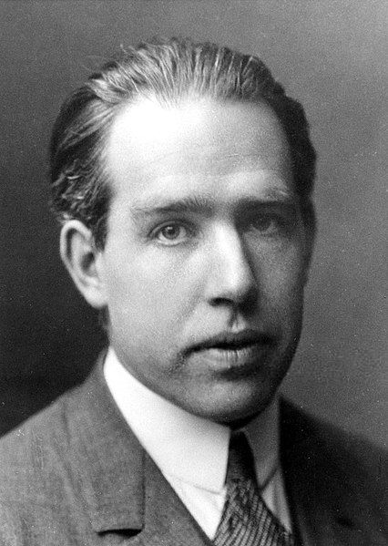Marie Curie
Foi uma física e química polonesa naturalizada francesa, que conduziu pesquisas pioneiras sobre radioatividade. Ela foi a primeira mulher a ganhar o Prêmio Nobel, sendo também a primeira pessoa e a única mulher a ganhá-lo duas vezes, além de ser a única pessoa a ser premiada em dois campos científicos diferentes. Ela teve papel fundamental no legado da família Curie, de cinco prêmios Nobel. Ela também foi a primeira mulher a se tornar professora na Universidade de Paris e, em 1995, se tornou a primeira mulher a ser sepultada por seus próprios méritos no Panteão de Paris.
Nascida em Varsóvia, no que era então o Reino da Polônia, parte do Império Russo, ela estudou na clandestina Universidade Volante de Varsóvia e iniciou seu treinamento científico prático na mesma cidade. Em 1891, aos 24 anos, seguiu sua irmã mais velha, Bronisława, para estudar em Paris, onde obteve seus diplomas superiores e conduziu seus trabalhos científicos subsequentes. Ela compartilhou o Prêmio Nobel de Física de 1903 com seu marido, Pierre Curie, e com o físico Henri Becquerel. Ela também ganhou o Prêmio Nobel de Química de 1911.
Suas realizações incluem o desenvolvimento da teoria da "radioatividade", técnicas para isolar isótopos radioativos e a descoberta de dois elementos químicos, o polônio e o rádio. Sob sua direção, foram conduzidos os primeiros estudos para o tratamento de neoplasias usando isótopos radioativos. Ela fundou o Instituto Curie em Paris e sua contraparte em Varsóvia, que continuam sendo grandes centros de pesquisa médica. Durante a Primeira Guerra Mundial, ela desenvolveu unidades de radiografia móvel para fornecer serviços de raio-X a hospitais de campanha.
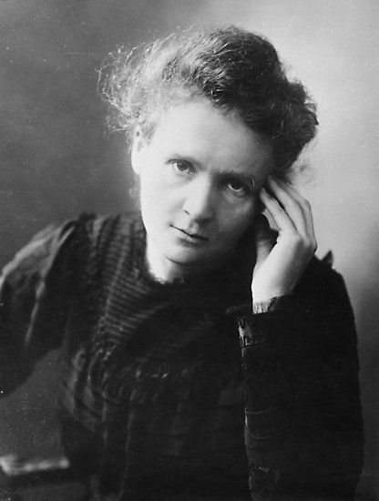Friedrich Nietzche
Suas ideias-chave incluíam a crítica à dicotomia apolíneo/dionisíaca, o perspectivismo, a vontade de poder, a morte de Deus, o Übermensch e eterno retorno. Sua filosofia central é a ideia de "afirmação da vida", que envolve questionamento de qualquer doutrina que drene uma expansiva de energias, não importando o quão socialmente predominantes essas ideias poderiam ser. Seu questionamento radical do valor e da objetividade da verdade tem sido o foco de extenso comentário e sua influência continua a ser substancial, especialmente na tradição filosófica continental compreendendo existencialismo, pós-modernismo e pós-estruturalismo. Suas ideias de superação individual e transcendência além da estrutura e contexto tiveram um impacto profundo sobre pensadores do final do século XIX e início do século XX, que usaram estes conceitos como pontos de partida para o desenvolvimento de suas filosofias. Mais recentemente, as reflexões de Nietzsche foram recebidas em várias abordagens filosóficas que se movem além do humanismo, por exemplo, o transumanismo.
Nietzsche começou sua carreira como filólogo clássico — um estudioso da crítica textual grega e romana — antes de se voltar para a filosofia. Em 1869, aos vinte e quatro anos, foi nomeado para a cadeira de Filologia Clássica na Universidade de Basileia, a pessoa mais jovem a ter alcançado esta posição. Em 1889, com quarenta e quatro anos de idade, sofreu um colapso e uma perda completa de suas faculdades mentais. A composição foi posteriormente atribuída a paresia geral atípica devido a sífilis terciária, mas este diagnóstico vem entrado em questão. Nietzsche viveu seus últimos anos sob os cuidados de sua mãe até à morte dela em 1897, depois caiu sob os cuidados de sua irmã, Elisabeth Förster-Nietzsche, até morrer em 1900.
Como sua cuidadora, sua irmã assumiu o papel de curadora e editora de seus manuscritos. Förster-Nietzsche era casada com um proeminente nacionalista e antissemita alemão, Bernhard Förster, e retrabalhou escritos inéditos de Nietzsche para se adequar à ideologia de seu marido, muitas vezes de maneiras contrárias às suas opiniões expressas, que estavam fortemente e explicitamente opostas ao antissemitismo e nacionalismo. Através de edições de Förster-Nietzsche, o nome de Friedrich tornou-se associado com o militarismo alemão e o nazismo, mas estudiosos posteriores do século XX vêm tentando neutralizar esse equívoco de suas ideias.
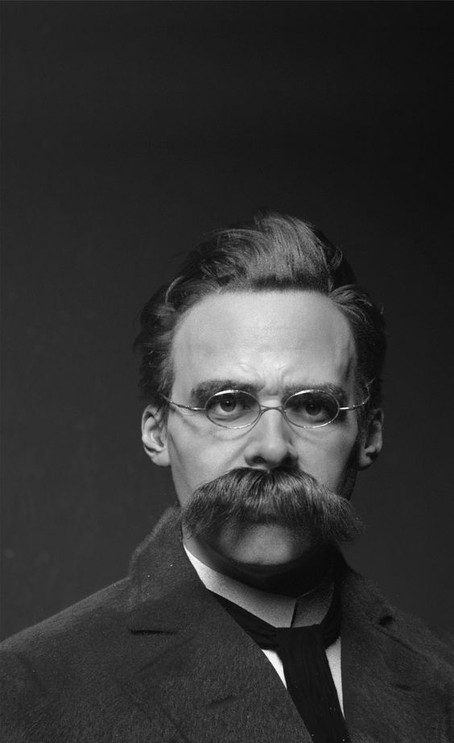Harriet Tubman
Nascida escravizada no condado de Dorchester, em Maryland, Tubman foi espancada e açoitada por seus vários senhores durante a infância. Ainda jovem, ela sofreu uma lesão craniana traumática quando um senhor de escravo jogou um pesado peso de metal num escravo fugitivo, mas acabou acertando-a. A lesão causou tonturas, dores e períodos de hipersonia que ocorreram ao longo de sua vida. Depois do ferimento, Tubman começou a ter visões estranhas e sonhos vívidos, os quais atribuiu a premonições de Deus. Estas experiências, combinadas com sua educação metodista levaram-na a se tornar uma religiosa devota.
Em 1849, Tubman escapou para a Filadélfia, mas imediatamente voltou a Maryland para resgatar sua família. Lentamente, um grupo de cada vez, ela trouxe parentes consigo para fora do estado e, eventualmente, guiou dúzias de outros escravos à liberdade. Peregrinando à noite e sob sigilo extremo, Tubman (ou "Moisés", como era chamada) "nunca perdeu um passageiro". Depois da aprovação do Fugitive Slave Act de 1850, ela ajudou a guiar fugitivos mais ao norte para a América do Norte Britânica, e ajudou escravos recém libertados a encontrar trabalho. Tubman conheceu John Brown em 1858 e ajudou-o a planejar e recrutar apoiadores para seu ataque a Harpers Ferry em 1859.
Quando a Guerra Civil Americana eclodiu, Tubman trabalhou para o exército da União, primeiro como cozinheira e enfermeira, depois como batedora armada e espiã. Foi a primeira mulher a liderar uma expedição armada na guerra, guiando o ataque no rio Combahee, que liberou mais de 700 escravos. Depois da guerra, ela aposentou-se e passou seus dias na propriedade de sua família, adquirida em 1859 em Auburn, no estado de Nova Iorque, onde cuidou de seus pais já idosos. Ela atuou no movimento pelo sufrágio feminino até a doença lhe impossibilitar de fazê-lo, quando foi internada num asilo para afro-americanos idosos que ajudara a criar anos antes. Depois de sua morte em 1913, tornou-se um ícone de coragem e liberdade.
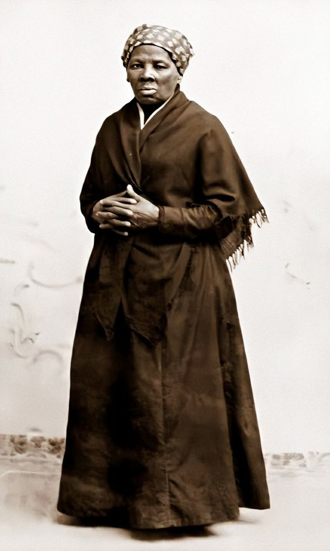Bertha von Suttner
Em 1875, foi para Paris como secretária do industrial sueco Alfred Nobel. Depois de curta permanência lá, retornou a Viena para casar-se secretamente com Arthur von Suttner. A pressão da família do Barão obrigou-os a afastar-se de Viena, e foram então para o Cáucaso, onde se mantiveram por nove anos ministrando aulas de música e publicando livros. Escreveu ainda quatro novelas e lançou seu primeiro livro Inventarium einer Seele - Inventário de uma Alma, com ideias corroboradas por autores evolucionistas como Darwin e Spencer, incluindo o conceito social de paz. Dessa época é o livro Es Löwos, uma descrição poética de sua vida.
Em 1885, obtido o perdão da família do esposo, retornaram para a Áustria-Hungria, onde Bertha von Suttner escreveu a maioria de seus livros, incluindo muitas novelas. Sua vida foi orientada quase que unicamente para a literatura.
Em 1889, publicou anonimamente obra contendo um ciclo de conferências utópicas, que intitulou Das Maschinenzeitalter - A Idade das Máquinas, que foi criticada por muitos por seu nacionalismo exacerbado e excessivas menções a armamentos. Em seguida, apareceu o romance Die Waffen nieder! Abaixo as Armas!, que teve muito sucesso e foi traduzido para diversas línguas. Esse romance deu-lhe fama e popularidade junto ao movimento pacifista. Em 1905 foi a primeira mulher a receber o Nobel da Paz. Nos anos que seguiram fez parte proeminente do comitê anglo-alemão da juventude para a paz, dando forma ao congresso de paz de 1905.
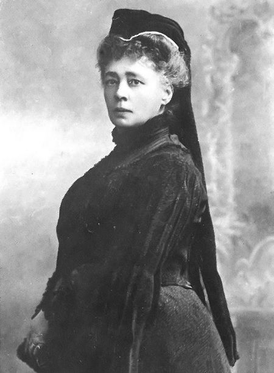Vicent van Gogh
Nascido numa família de classe média alta, Van Gogh começou a desenhar ainda criança, sendo descrito como uma pessoa séria, quieta e pensativa. Trabalhou como vendedor de arte quando jovem e viajava frequentemente. Porém, entrou em depressão depois de ser transferido para Londres. Eventualmente, Van Gogh acabou por se voltar para a religião, tendo passado algum tempo como missionário protestante na Bélgica. Ao longo dos anos enfrentou problemas de saúde e solidão, até começar a pintar em 1881, tendo-se mudado para casa dos seus pais. O seu irmão mais novo, Theo, apoiou-o financeiramente e os dois mantiveram uma duradoura e prolífica correspondência ao longo da vida de ambos. Os seus primeiros trabalhos exploravam o tema da natureza-morta e retratos da vida no campo. Em 1886, Van Gogh mudou-se para Paris onde se encontrou com vanguardistas como Émile Bernard e Paul Gauguin, que se opunham à sensibilidade impressionista. Lá, à medida que produzia suas obras, criou uma nova abordagem às naturezas-mortas e às paisagens, com suas pinturas a assumir cores mais vivas enquanto desenvolvia um estilo que se estabeleceu por completo em 1888, durante a sua estadia em Arles. Durante esse período, o pintor também ampliou seus temas que passaram a incluir oliveiras, ciprestes, campos de trigo e girassóis.
Durante a sua vida, Vincent teve episódios psicóticos e delírios, temendo pela sua estabilidade mental e negligenciando frequentemente a sua saúde física, por um lado, ao não manter uma alimentação regular e, por outro lado, bebendo muito. Sua amizade com Gauguin terminou numa briga que culminou com um ataque de fúria de Van Gogh, durante o qual, cortou parte de sua própria orelha esquerda com uma lâmina. Acabou por passar algum tempo internado em vários hospitais psiquiátricos, incluindo o período passado no Saint-Rémy-de-Provence. Depois de ter recebido alta, ficou sob os cuidados do médico homeopata Paul Gachet, mudando-se para o vilarejo de Auvers-sur-Oise.
Não tendo obtido sucesso nem reconhecimento durante sua vida, Van Gogh era encarado como um louco e um fracassado, conquistando alguma fama apenas após seu suicídio. O agravamento do seu estado de depressão, levou o pintor a disparar um revólver contra o seu próprio peito no dia 27 de julho de 1890, vindo a falecer na sequência dos ferimentos causados apenas dois dias depois. Com o passar do tempo, Van Gogh passou a existir na imaginação pública como a essência do génio incompreendido, o artista no qual "os discursos sobre loucura e criatividade convergem". A sua reputação começou a crescer no início do século XX, enquanto elementos de seu estilo de pintura passaram a ser incorporados pelos fauvistas e expressionistas alemães. Van Gogh alcançou grande sucesso comercial, popular e de crítica nas décadas seguintes, sendo lembrado atualmente como um pintor importante e trágico, cuja personalidade problemática tipifica os ideais românticos do artista torturado.
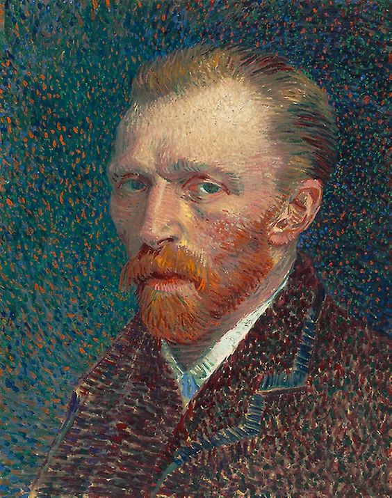Zygmunt Bauman
Ao longo dos anos 1940 e 1950, Bauman foi um entusiasmado militante do Partido Operário Unificado Polaco, o partido comunista da Polônia. Segundo o Instituto da Memória Nacional da Polônia, entre 1945 e 1953 Bauman era oficial do Corpo de Segurança Interna (em polonês, Korpus Bezpieczeństwa Wewnętrznego, KBW), uma unidade militar especial formada na Polônia, sob o governo stalinista, para combater os ucranianos nacionalistas insurgentes e os remanescentes do Armia Krajowa, a principal organização da resistência da Polônia à ocupação do país, durante a Segunda Guerra.[4] Mais tarde, entre 1945 e 1948, Bauman trabalhou para a inteligência militar, embora a natureza e a extensão de suas atividades sejam desconhecidas, assim como as circunstâncias sob as quais terá abandonado tais atividades.
Durante uma entrevista ao jornal The Guardian, Bauman confirmou ter sido um devotado comunista - durante e depois da Segunda Guerra - e nunca ter feito segredo disso. Admitiu que ingressar no serviço de inteligência militar aos 19 anos tenha sido um erro, apesar de só ter realizado tediosas atividades burocráticas e jamais ter dado informações sobre alguém.
Enquanto servia no KBW, Bauman também estudava sociologia na Academia de Política e Ciências Sociais de Varsóvia. Mas, em 1953, já no posto de major, foi subitamente excluído do KBW - e de maneira desonrosa -, depois que seu pai se aproximou da embaixada israelense em Varsóvia, com vistas a emigrar para Israel. Uma vez que Bauman não compartilhava absolutamente das ideias sionistas do pai, sendo, de fato, francamente antissionista, sua demissão causou um severo, embora temporário, distanciamento do pai. Durante o período em que ficou desempregado, decidiu completar seu mestrado e, em 1954, tornou-se professor assistente na Universidade de Varsóvia, onde permaneceu até 1968. Inicialmente, Bauman se manteve próximo à ortodoxia marxista mas, influenciado por Antonio Gramsci e Georg Simmel, tornou-se crescentemente crítico ao governo comunista da Polônia. Passaria então a trabalhar, com outros acadêmicos da Universidade, numa concepção humanista do marxismo. De todo modo, Bauman sempre se declarou Socialista e, nos seus últimos anos de vida, dizia que, mais do que nunca, o socialismo é necessário ao mundo.
Submetido a uma crescente pressão política, conectada ao expurgo conduzido por Mieczysław Moczar, chefe do Służba Bezpieczeństwa, o Serviço de Segurança polonês, Bauman renunciou à sua filiação ao Partido Operário Unificado em janeiro de 1968. Os eventos de março de 1968 na Polônia culminaram com um expurgo que levou muitos comunistas poloneses de ascendência judia a sair do país. Bauman, que havia sido demitido da Universidade de Varsóvia, estava entre eles. Para deixar o país, teve que abdicar de sua cidadania polonesa. Primeiramente foi para Israel, para lecionar na Universidade de Tel Aviv. Em 1971, aceitou um convite para ensinar sociologia na Universidade de Leeds. Desde então, seus trabalhos passaram a ser publicados quase que exclusivamente em inglês, e sua reputação cresceu exponencialmente. Em 2011, durante entrevista concedida ao semanário polonês Polityka, Bauman criticou Israel e o sionismo, dizendo que Israel não estava interessado na paz mas somente em "se aproveitar do Holocausto para legitimar atos inadmissíveis". Comparou o Muro da Cisjordânia aos muros do Ghetto de Varsóvia, onde centenas de milhares de judeus morreram. O embaixador israelense em Varsóvia, Zvi Bar, qualificou os comentários de Bauman como "meias verdades" e "generalizações infundadas".
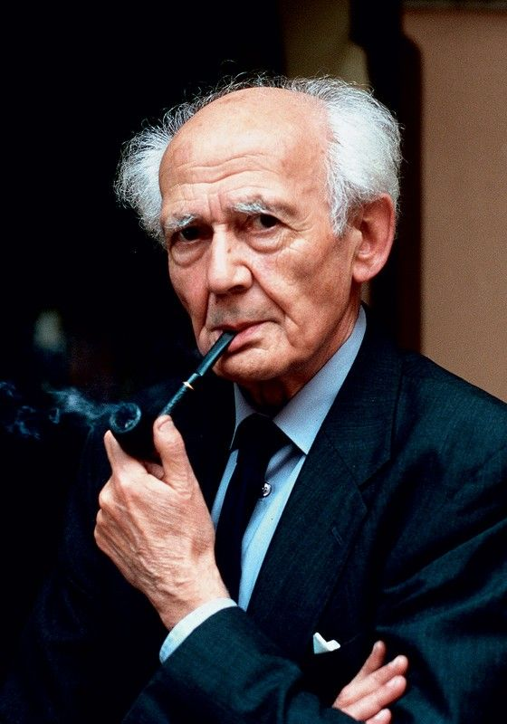